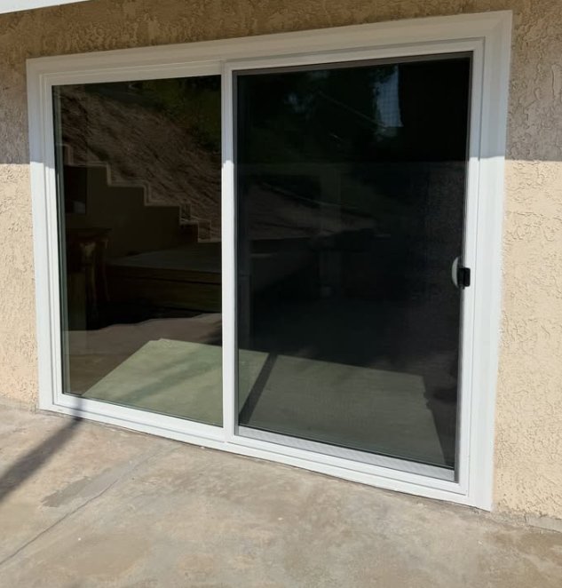

Professional installation, premium materials and service built around your home.

Vinyl, retrofit, dual pane & specialty glass.
LEARN MORE →
New installations, roller replacement & repairs.
LEARN MORE →
Exterior & interior door installations.
LEARN MORE →
Security & decorative doors, custom fit.
LEARN MORE →
Sliding, security, retractable & window screens.
LEARN MORE →Fast estimates. Professional installation. Premium materials.